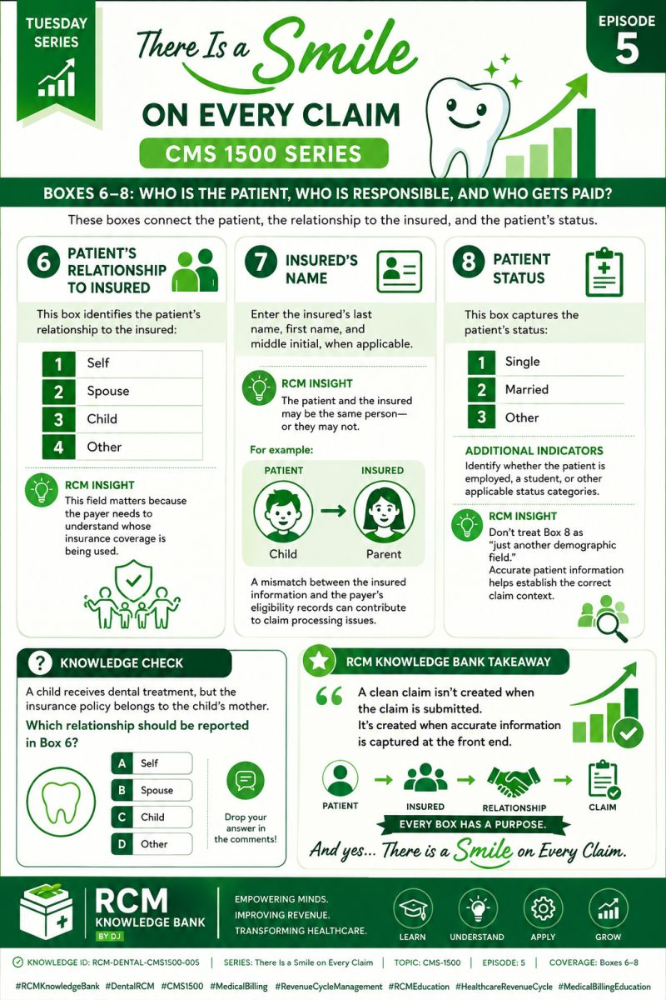

← Back to the Knowledge BankDental revenue cycle · Starter lessons
See the story behind the dental claim.
Explore how the treatment plan, procedure, tooth/surface details and benefit rules influence claim quality and follow-up.

Clinical detail and claim detail must tell a consistent story.
🦷
Lesson 1Translate the treatment story into claim detail.
Dental claim requirements can depend on the procedure, tooth, surface, quadrant, date, documentation and the plan's rules.
DocumentCapture clinical findings and treatment performed.
SpecifyCheck tooth, surface, quadrant and procedure details when relevant.
ValidateCheck coding, attachments and plan requirements.
Follow throughRead response, correct supported errors and track outcome.
A claim is returned because a tooth or surface detail is missing. What is the strongest next step?
Never guess clinical details.Claim data must be supported by the record.
Correct.Use documented facts and the applicable payer/claim requirements.
That may misrepresent the service.Investigate and resolve the supported issue instead of deleting information simply to bypass an edit.
🧾
Lesson 2Understand the estimate versus the adjudicated result.
A pre-treatment estimate or benefit inquiry can inform planning, but it should not be described as a guarantee of final payment.
📋
Before treatment
Check eligibility, plan limits, waiting periods, frequency rules and pre-estimate processes when applicable.
💳
After adjudication
Compare the explanation of benefits with the submitted claim, contractual/plan adjustments and patient responsibility rules.
The estimate suggested a benefit, but the final claim pays differently. What now?
Not automatically.Patient responsibility must be determined under the applicable plan, agreements and rules.
Correct.Reconcile the difference using the evidence and the provider’s established workflow.
No.Estimates and adjudication may differ; understand the governing terms and facts.
Reference starting point: American Dental Association — Dental insurance resources. Confirm the applicable plan and current guidance.